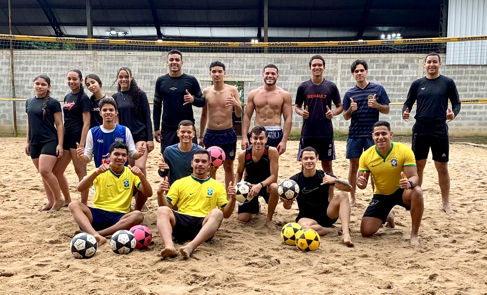

Aqui na Evolui FTV, temos uma Metodologia 100% focada em quem está começando — sem pressão, só evolução.
Primeira aula é por nossa conta · turmas reduzidas · zero experiência necessária

O Evolui FTV nasceu da percepção de que o futevôlei, apesar de apaixonante, muitas vezes intimida quem está tentando dar os primeiros toques. Sentíamos falta de um espaço que acolhesse o iniciante com paciência, dedicação e uma técnica correta.
Nossa missão vai além de ensinar fundamentos como passe, defesa e ataque. Aqui o erro faz parte do processo, e cada acerto é comemorado.
"Primeira experiência no futvôlei e já gostei demais! parabéns pela dedicação de vocês, energia e atenção. com certeza irei voltar mais vezes!."
"Gostei muito de hoje, vi que preciso melhorar. Gostei muito de como vocês ensinam e a forma de como vocês sempre tenta corrigir nossos erros. Sinto que aos poucos vou evoluindo e vou sempre tentar me esforçar cada vez mais."
"Ter a aula foi uma experiência incrível! Aprendi muito e saio dessa oportunidade com mais conhecimento e motivação. Eu super recomendo pra quem pretende sair do sedentarismo ou conhecer outro Esporte."
Turmas em quadra de areia com boa iluminação e estrutura completa:
Dúvidas sobre matrícula ou quer marcar a aula experimental?
AABB Garanhuns — vila do quartel, Garanhuns-PE. Estacionamento e vestiário no local.
Ver no mapaNão! As turmas são pensadas para quem nunca tocou numa bola. Você começa pelos fundamentos básicos, e tudo no seu ritmo.
Não é necessário. A aula é estruturada em níveis, e nós professores ajustamos a intensidade conforme o grupo evolui.
Não. Basta vir com roupa confortável e disposição — bolas e demais materiais ficam por nossa conta.
Sim, a maioria dos alunos começa sozinho. As duplas e times se formam naturalmente dentro das turmas.
Você escolhe um horário disponível, avisa pelo WhatsApp, e participa de uma aula completa sem nenhum custo ou compromisso.
Venha sentir a energia da areia, conhecer a nossa metodologia sem compromisso e dar os primeiros passos no esporte que vai mudar sua rotina.
Agendar Aula Experimental Grátis